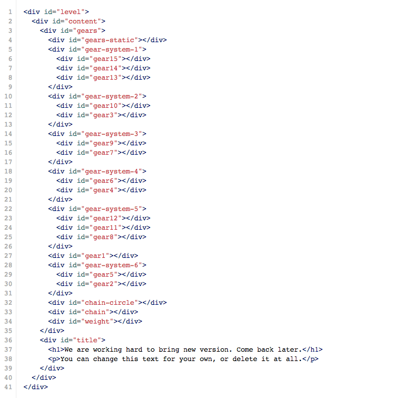

Created: 03/01/2014
By: Maryna Aleksandrova
Email: hello@marynaaleksandrova.info
This is CSS3 animation, that you can use as Technical Problems page, 404 Page, Launch Page or any other page on your site. Thank you for purchasing it. If you have any questions that are beyond the scope of this help file, please feel free to email via my user page contact form here. Thanks so much!
This page has two main sections: 1) #gears - contains all animated illustrative elements and 2) #title - contains name of the page and text description.
I'm using one CSS file for this animated maintanance page. This file contains some general styling and all of the specific stylings for the page. The file is separated into sections using:
/* === COMMON PAGE STYLES === */ common basic code for page /* === STYLES FOR ILLUSTRATION ELEMENTS === */ styling of all illustartions elements on the page /* === ANIMATIONS === */ css animations
Text is fully editable, as well as background color. I would not suggest to change anything else in CSS file, unless you are very proficient with CSS animations.
This theme doesn't use any Javascript code.
Design for this single page comes in 5 thems. They are by numbers: 1, 2, 3, 4, 5. You can find them in folder of appropriate name.
Once again, thank you so much for purchasing this theme. As I said at the beginning, I'd be glad to help you if you have any questions relating to this theme. No guarantees, but I'll do my best to assist. If you have a more general question relating to the themes on ThemeForest, you might consider visiting the forums and asking your question in the "Item Discussion" section.
Maryna Aleksandrova